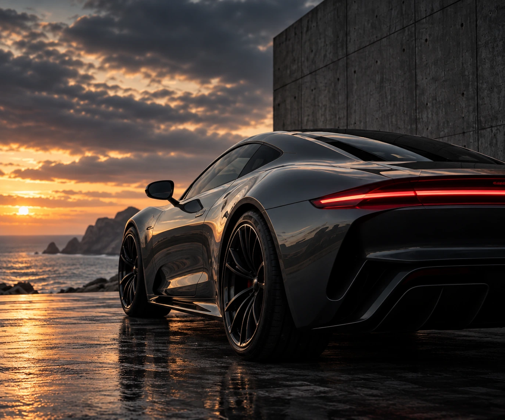
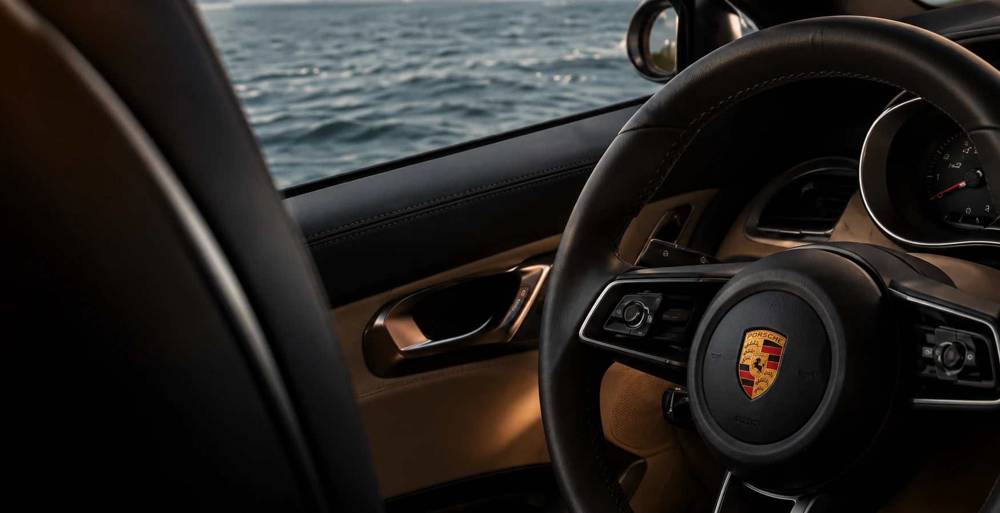

Cockpit em pele pretaReferência · Christopher Lam / Unsplash

Melhorias focadas em conforto, materiais e ambiente — sem transformar o carro numa coisa que nunca foi pensada para ser.
Uma seleção visual da direção de detailing, refit e interiores que estamos a desenvolver para a PAPOA Cars.
Imagens de referência do Unsplash — não são projetos concluídos pela PAPOA.




PAPOA Cars centra-se no interior, acabamento e apresentação. Trabalhamos à volta da identidade original do carro, melhorando as áreas que aumentam conforto, qualidade percebida e personalidade.
Falar sobre o carro →Intervenções em bancos, forros, painéis e acabamentos da cabine.
→Pele, Alcantara, tecidos e costuras escolhidos para o veículo.
→Madeira, metal, materiais técnicos e pequenos detalhes personalizados.
→Pequenas alterações que melhoram tacto, utilização e ambiente.
→Apresentação interior e exterior para fechar a transformação.
→Detalhes discretos desenvolvidos para um resultado mais individual.
→
Cars é uma área mais pequena da PAPOA, mas a filosofia é a mesma: materiais, detalhe, conforto e execução coerentes do conceito ao acabamento.
Iniciar projeto →